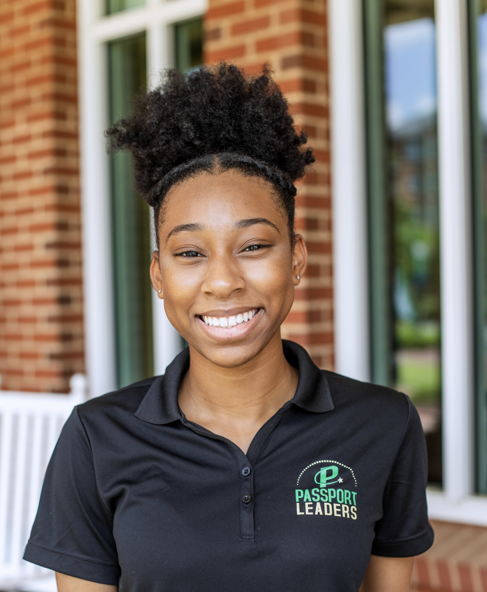

Doctoral Student
College of Computing and Informatics
University of North Carolina at Charlotte
9201 University City Boulevard
Charlotte, NC 28223-0001
Email: alee164 "at" charlotte "dot" edu
About
Currently Ayanna Lee is a first year PhD student in the Software and Information Systems Program at the University of North Carolina at Charlotte. Her background in wearable technology research fuels her passion for exploring the nuances associated with user interaction. More specifically, working class communities' reciprocity with new age technologies. Ayanna is currently working as a Research Assistant and is always interested in making more connections.
Reach out to alee164@charlotte.edu to connect!
Graduate Research Assistant
Conducted exploratory research in human‑centered computing by reviewing literature, developing research questions, and crafting academic papers.
Peer Mentor
Mentored Computer Science students by teaching Python concepts and solving technical challenges, enhancing both academic performance and community engagement.
Summer Researcher
Designed a prototype mental health application to manage depression and anxiety, demonstrating analytical and problem-solving skills. Presented research findings at the OUR Summer Research Symposium and in a detailed research paper.
Undergraduate Researcher
Analyzed mental health applications to identify key themes for technology improvements, applying strong analytical skills. Documented findings in a comprehensive research report for faculty review.
Projects
The Decomposition of Mental Health Barriers within the African American Community
Can an application be created that effectively identifies mental health distress and recommends a tailored intervention before it manifests into a crisis? This project aimed to mitigate the mental health disparities that plague the African American community. It contributes to providing effective healthcare interventions for marginalized communities traditionally excluded from healthcare research.